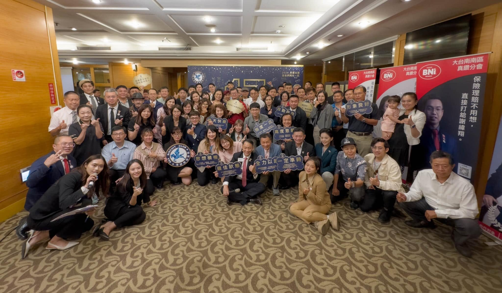

緣起
從 2013 年開始，一講就是十幾年
大紀元 · 2014年3月17日 桃園報導
「每個月在桃園婦女館都會有一場〝大樹小講〞演講。課程內容很廣，有溝通表達、親子教育、行銷策略、兩性關係、人際關係等等⋯這次已經是第五期。大樹教練受過國際級演講大師的訓練，口才、自信、談吐很有風格，可以用：幽默風趣，千變萬化，令人拍案叫絕來形容。」
查看原始報導2014年3月是第五期公益巡講——換算回去，「大樹小講：無話不談」這個系列，從 2013年10月 左右就開始了。
十幾年來，主題橫跨溝通、親子、行銷、兩性、人際、職場、團隊——包括時下最夯的AI話題；正如它的名字，無話不談。
現在，這個系列重新出發，變成一系列固定舉辦的線上與實體活動，繼續陪大家把話說開、把關係理順。

1 / 24